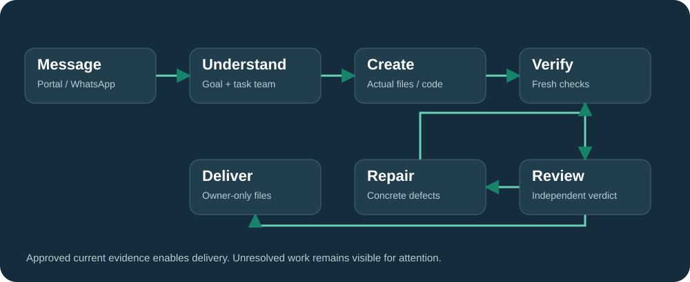
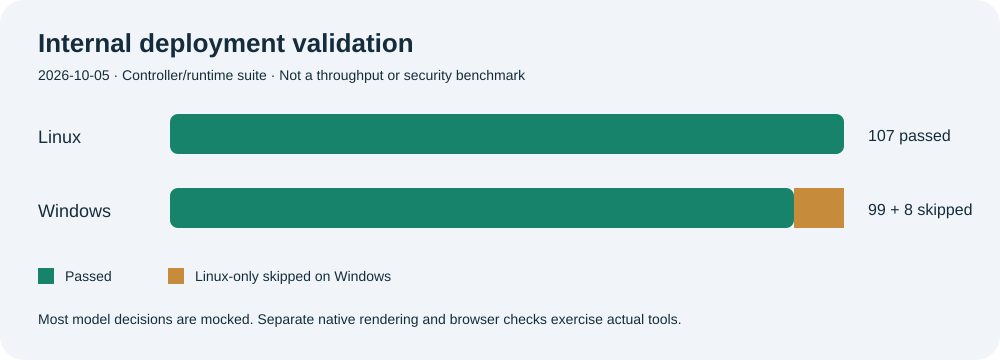

Sandboxed coding
Python, Node and PHP projects use isolated execution. Web tasks include fresh desktop and mobile browser workflows.
An autonomous AI task platform that understands the goal, assigns specialists, uses real tools and checks the resulting files before delivery.
Experimental, source-available software for your own Linux infrastructure. Provider access and operator setup are required.
Conversation gets a direct answer. Artifact requests get an output contract, a task playbook and the specialist team they need. Defects return to debugging; fresh evidence and an independent verdict enable delivery.

Python, Node and PHP projects use isolated execution. Web tasks include fresh desktop and mobile browser workflows.
Editable PowerPoint files and actual generated rasters receive file checks, rendered pixel inspection and independent review.
Per-user portal ownership and WhatsApp sessions keep project history, evidence and downloads with the right account.

Snapshot: October 5, 2026. Most model decisions in the controller suite are mocked; separate native rendering and browser checks exercise actual tools. The internal unit suite is excluded from the public source. Output quality, missing SDKs and provider quota remain possible limitations.
Share reproducible issues, useful integration ideas and sanitized evidence. Concrete acceptance criteria make improvements easier to verify.
Open an issue ↗